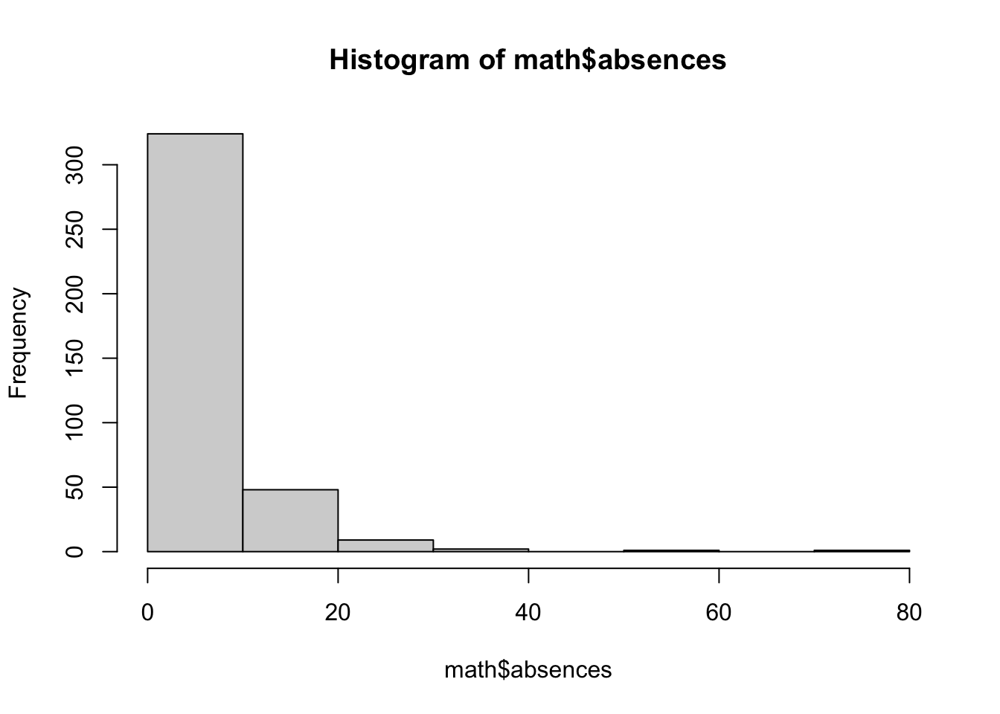
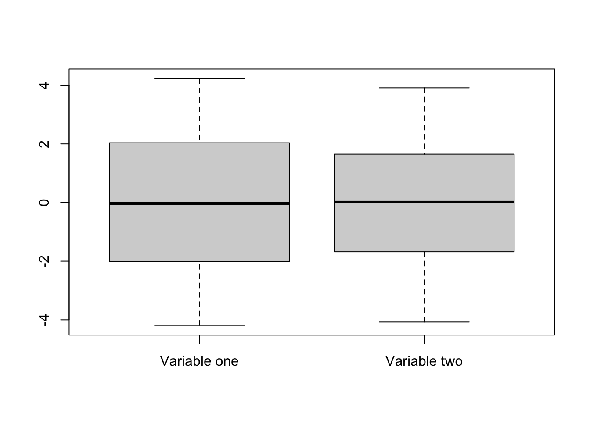
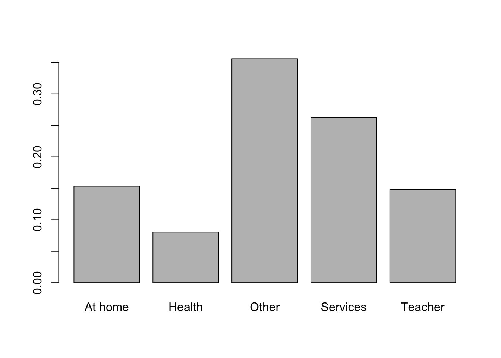
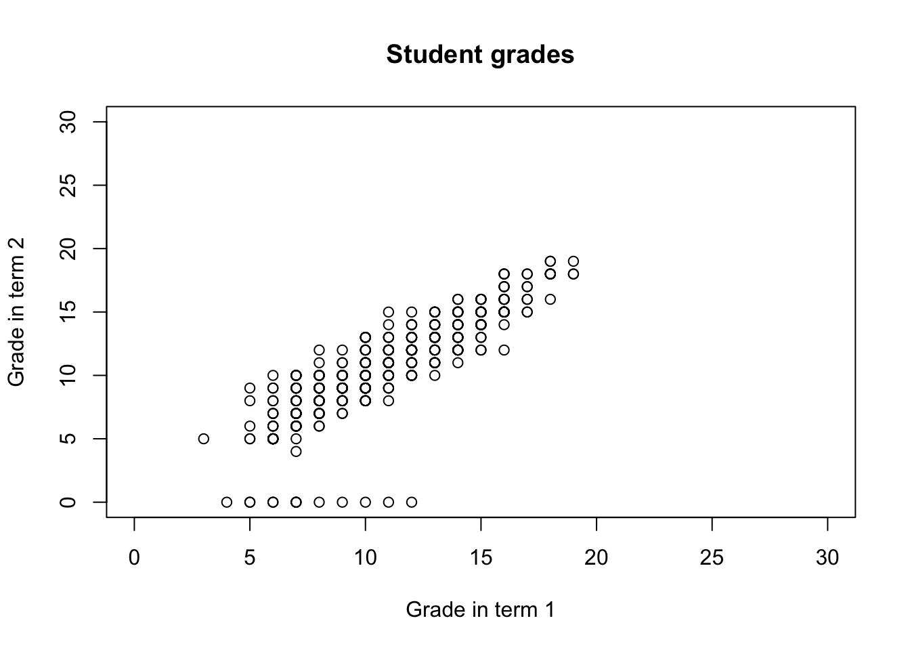
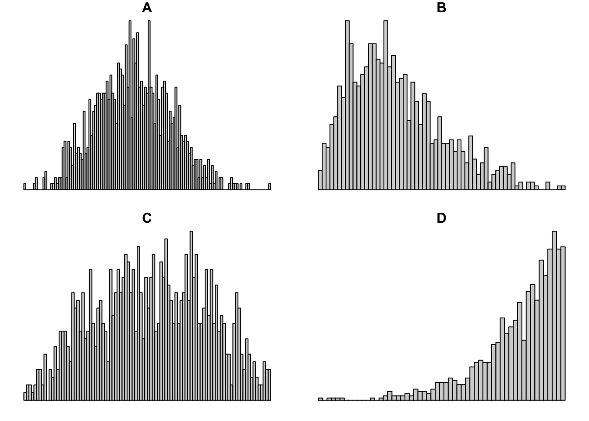

4 Exploratory Data Analysis
4.1 Content
What is exploratory data analysis?
Next to data cleaning, exploratory data analysis is one of the first steps taken in the process of analysing quantitative data of any kind. Essentially, it refers to getting an overview of the data through looking at simple summary statistics and plots to understand the distribution of each variable, as well as look for particularly obvious and pronounced relationships between the variables. If one is taking a deductive approach, with a clear-cut, falsifiable hypothesis about the data defined upfront (such as higher per capita income is related to higher levels of democracy or income equality increases levels of subjective well-being), exploratory data analysis helps you verify whether the hypothetized relationship is in the data at all - for example by applying the so-called Inter-Ocular Trauma Test (if it hits you between the eyes, it's there!) to a plot. This informs further formal statistical analyses. It also allows you to identify factors that may be important for the hypothesized relationship and should be included in the formal statistical model. In case of an inductive approach, exploratory data analysis allows you to find patterns and form hypothesis to be furhter tested using formal statistical methods. [MAKE SOME SORT OF REFERENCE THE PART ON STATISTICAL SIGNIFICANCE TESTING].
In this chapter, we will cover some basic exploratory methods that can be applied to examine numeric and categorical data. For this purpose we will use the data from UCI Machine Learning Repository, which covers math grades achieved in three years of education by a sample of students, along with some demographic variables 3. The data download link is available at the top of this course page. To load it, we can use the familiar read.csv function. Note that in this case, the sep optional argument is specified to ";". You can find out why by reading about this argument in the function documentation (?read.csv) and by examining the dataset using your computer's notepad app.
math <- read.csv("data/student/student-mat-data.csv", sep = ";")First look at the data
After loading the data into R, it's useful to get an overview of it. The first thing it's worth to look at is how many variables and how many observations are there in the dataset. This can be seen in the environment browser next to the name of the data frame. We can also access the dimensions of our data (i.e. how many rows and columns/observations and variables it has) through the dim function.
dim(math)[1] 395 33We can see that the math dataset consists of 395 observations of 33 variables. The next useful step is to look at the dataset's structure using the str variable:
str(math)'data.frame': 395 obs. of 33 variables:
$ school : chr "GP" "GP" "GP" "GP" ...
$ sex : chr "F" "F" "F" "F" ...
$ age : int 18 17 15 15 16 16 16 17 15 15 ...
$ address : chr "U" "U" "U" "U" ...
$ famsize : chr "GT3" "GT3" "LE3" "GT3" ...
$ Pstatus : chr "A" "T" "T" "T" ...
$ Medu : int 4 1 1 4 3 4 2 4 3 3 ...
$ Fedu : int 4 1 1 2 3 3 2 4 2 4 ...
$ Mjob : chr "at_home" "at_home" "at_home" "health" ...
$ Fjob : chr "teacher" "other" "other" "services" ...
$ reason : chr "course" "course" "other" "home" ...
$ guardian : chr "mother" "father" "mother" "mother" ...
$ traveltime: int 2 1 1 1 1 1 1 2 1 1 ...
$ studytime : int 2 2 2 3 2 2 2 2 2 2 ...
$ failures : int 0 0 3 0 0 0 0 0 0 0 ...
$ schoolsup : chr "yes" "no" "yes" "no" ...
$ famsup : chr "no" "yes" "no" "yes" ...
$ paid : chr "no" "no" "yes" "yes" ...
$ activities: chr "no" "no" "no" "yes" ...
$ nursery : chr "yes" "no" "yes" "yes" ...
$ higher : chr "yes" "yes" "yes" "yes" ...
$ internet : chr "no" "yes" "yes" "yes" ...
$ romantic : chr "no" "no" "no" "yes" ...
$ famrel : int 4 5 4 3 4 5 4 4 4 5 ...
$ freetime : int 3 3 3 2 3 4 4 1 2 5 ...
$ goout : int 4 3 2 2 2 2 4 4 2 1 ...
$ Dalc : int 1 1 2 1 1 1 1 1 1 1 ...
$ Walc : int 1 1 3 1 2 2 1 1 1 1 ...
$ health : int 3 3 3 5 5 5 3 1 1 5 ...
$ absences : int 6 4 10 2 4 10 0 6 0 0 ...
$ G1 : int 5 5 7 15 6 15 12 6 16 14 ...
$ G2 : int 6 5 8 14 10 15 12 5 18 15 ...
$ G3 : int 6 6 10 15 10 15 11 6 19 15 ...This lists all the variables in the dataset, with their names and types. This way, we can scope the dataset for the variables that are interesting for our analysis and start thinking about possible relationships we might want to investigate.
Finally, we can get some basic summary statistics using the summary function:
summary(math) school sex age address famsize Pstatus
Length:395 Length:395 Min. :15.0 Length:395 Length:395 Length:395
Class :character Class :character 1st Qu.:16.0 Class :character Class :character Class :character
Mode :character Mode :character Median :17.0 Mode :character Mode :character Mode :character
Mean :16.7
3rd Qu.:18.0
Max. :22.0
Medu Fedu Mjob Fjob reason guardian
Min. :0.000 Min. :0.000 Length:395 Length:395 Length:395 Length:395
1st Qu.:2.000 1st Qu.:2.000 Class :character Class :character Class :character Class :character
Median :3.000 Median :2.000 Mode :character Mode :character Mode :character Mode :character
Mean :2.749 Mean :2.522
3rd Qu.:4.000 3rd Qu.:3.000
Max. :4.000 Max. :4.000
traveltime studytime failures schoolsup famsup paid
Min. :1.000 Min. :1.000 Min. :0.000 Length:395 Length:395 Length:395
1st Qu.:1.000 1st Qu.:1.000 1st Qu.:0.000 Class :character Class :character Class :character
Median :1.000 Median :2.000 Median :0.000 Mode :character Mode :character Mode :character
Mean :1.448 Mean :2.035 Mean :0.335
3rd Qu.:2.000 3rd Qu.:2.000 3rd Qu.:0.000
Max. :4.000 Max. :4.000 Max. :3.000
NA's :1
activities nursery higher internet romantic famrel
Length:395 Length:395 Length:395 Length:395 Length:395 Min. :1.000
Class :character Class :character Class :character Class :character Class :character 1st Qu.:4.000
Mode :character Mode :character Mode :character Mode :character Mode :character Median :4.000
Mean :3.944
3rd Qu.:5.000
Max. :5.000
freetime goout Dalc Walc health absences
Min. :1.000 Min. :1.000 Min. :1.000 Min. :1.000 Min. :1.000 Min. : 0.000
1st Qu.:3.000 1st Qu.:2.000 1st Qu.:1.000 1st Qu.:1.000 1st Qu.:3.000 1st Qu.: 0.000
Median :3.000 Median :3.000 Median :1.000 Median :2.000 Median :4.000 Median : 4.000
Mean :3.235 Mean :3.109 Mean :1.481 Mean :2.289 Mean :3.554 Mean : 5.709
3rd Qu.:4.000 3rd Qu.:4.000 3rd Qu.:2.000 3rd Qu.:3.000 3rd Qu.:5.000 3rd Qu.: 8.000
Max. :5.000 Max. :5.000 Max. :5.000 Max. :5.000 Max. :5.000 Max. :75.000
NA's :1
G1 G2 G3
Min. : 3.00 Min. : 0.00 Min. : 0.00
1st Qu.: 8.00 1st Qu.: 9.00 1st Qu.: 8.00
Median :11.00 Median :11.00 Median :11.00
Mean :10.91 Mean :10.71 Mean :10.42
3rd Qu.:13.00 3rd Qu.:13.00 3rd Qu.:14.00
Max. :19.00 Max. :19.00 Max. :20.00
This lists the minimum, maximum, mean and quartiles for each of the numeric variables, along with the count of missing values in it. These concepts will be discussed in more detail in the next sections of this chapter. In case of factor variables, it provides a count of each level of the variable. It also mentions the number of missing variable - in this case, we can see that there are couple of NAs in there. Before starting the analysis, we need to address that - in this case, we simply drop them.
math <- math[complete.cases(math), ]Numeric vs categorical variables
Numeric variables
Histograms
The simplest and often most powerful way to examine a single numeric variable is through the use of histogram. Histogram divides a variable in ranges of equal size called bins. Each bin is then represented as a bar, the height of which corresponds with the count/proportion of the observations falling in that range. The main difference between a histogram and a bar chart is that a histogram does not have breaks between the bars, because the variable it describes is assumed to be continuous, not discrete. Let's examine two numeric variables from the math dataset - age and absences (total absent hours recorded by the teacher for each student) using histograms. A histogram is created using the hist function:
hist(math$age, breaks = length(unique(na.omit(math$age))))
hist(math$absences)
In both cases, we can see that the lowest values are the least frequent. For example, from the second histogram we can read that 250 of the 395 students in the samples were absent between 0-5 hours during the school year.
Mean
Mean (aka average) is the simplest statistic describing any numeric variable - it is simply the sum of a variable/vector divided by its length. In R, we can calculate the mean of any variable using the mean function. For example, let's examine the average number of absences in the sample:
sum(math$absences)/nrow(math)[1] 5.675325mean(math$absences)[1] 5.675325The same done for age returns a missing value NA.
mean(math$age)[1] 16.69091This is because there are missing values in the age variable (how can you verify this?). To compute the mean without those values, you can specify the argument na.rm(remove NA values) to TRUE.
mean(math$age, na.rm = TRUE)[1] 16.69091We can also use the trim argument from to specify the fraction of observations to be removed from each end of the sorted variables before calculating the mean. This makes our estimate of the mean more robust to potentially large and unrepresentative values affecting the calculated value - so-called outliers, which will be discussed more extensively in the section on quantiles. Note that specifying the trim argument to 0.1 doesn't seem to change the mean of age significantly:
mean(math$age, na.rm = TRUE, trim = 0.1)[1] 16.62136However, doing the same in case of absences changes the value of average absences quite a lot. Can you think of the reason why? Take a look at the histograms of both variables.
mean(math$absences, trim = 0.1)[1] 4.2589Variance and standard deviation
While a mean offers a good description of the central tendency of a variable (i.e. a value that we would expect to see most often), describing a variable just by its mean can be very misleading. For example, consider the values -10000, 20, 10000 and 15, 20, 25. In both cases the mean is the same:
x <- c(15, 20, 25)
y <- c(-985, 20, 1025)
mean(x) == mean(y)[1] TRUEHowever, it would be very misleading to say that these variables are similar. We could try to describe this difference by computing the average distance between each value and the mean:
mean(x - mean(x))[1] 0mean(y - mean(y))[1] 0However, this results in a 0, since the negative and positive values in our example cancel each other out. To avoid this, we can measure variance, which calculate the squared distance between each value of a variable and its mean. Since the distance is squared (always positive), the positive and negative values will not cancel out.
mean((x - mean(x))^2)[1] 16.66667mean((y - mean(y))^2)[1] 673350We can see that this captures the difference between our two vectors. The variance is calculated using the var function:
var(x)[1] 25var(y)[1] 1010025Note that this gives us different results that our variance computed by hand. This is because the var function calculates the sample variance, in which we divide the sum of squared distances between the samples. The variance we calculated "manually" above is equivalent to:
sum((x - mean(x))^2)/length(x)[1] 16.66667mean((x - mean(x))^2)[1] 16.66667Instead, when calculating sample variance, we divide the sum of squared distances from the mean by \(N-1\), where N is the number of observations/length of the vector. This is because dividing the sample by N tends to underestimate the variance of the population. The mathematical reasons behind it are clearly outlined in this article. So, we can "manually" arrive at equivalent estiamte to the one obtained using the var function by:
sum((x - mean(x))^2)/(length(x) - 1) == var(x)[1] TRUEWe can apply the variance function to absence and age, to see their spread:
var(math$age, na.rm = TRUE)[1] 1.625568var(math$absences)[1] 61.92296One problem arising when using variance to describe the data is that its units aren't interpretable, since they are squared. Therefore, saying that the variance of the absence time is 64 squared hours doesn't sound too intuitive. To avoid this, we usually use use the standard deviation in practice, which is simply the square root of the variance. Through taking the square root we return the variable to its original units. The standard deviation of a variable is calculated using the sd function:
sd(math$age, na.rm = TRUE)[1] 1.274978sd(math$age, na.rm = TRUE) == sqrt(var(math$age, na.rm = TRUE))[1] TRUEWe can know compare the standard deviation and mean of both variables:
with(math, c(mean = mean(age, na.rm = TRUE),
sd = sd(age, na.rm = TRUE))) mean sd
16.690909 1.274978 with(math, c(mean = mean(absences, na.rm = TRUE),
sd = sd(absences, na.rm = TRUE))) mean sd
5.675325 7.869114 It can be clearly seen that the hours of students' absence have more variability than the students' ages. This makes intuitive sense, since the sample consists of students from roughly the same age group (the easiest way you can see it is by running unique(math$age)). At the same time, students differ match more in the total hours of absence. This explains why the trimmed mean was that different from overall mean in case of absences, yet quite similar for age.
You can use the widget below to see how varying the standard deviation and the mean affects the distribution of a variable (in this case a normally distributed random variable). Note that you need an active internet connection for the app to load.
Quantiles
The final statistic we are going to discuss is quantile. Quantiles allow us to get a better grasp of the distribution of the data. Essentially, quantiles are cut points that divide the variable into intervals of equal sizes. For example, deciles are 10-quantiles, dividing the variable into 10 ranges. For example the 8th decile of a variable is the value greater than 80% of the values in this variable. In R we can obtain an arbitrary quantile using the quantile function, specifying the proportion below each of the cutpoints through the probs argument.
quantile(math$absences, probs = 0.9)90%
14 In the above example, we can see that 90% of the values of the variable absences are lower than 14. The probs argument can be either a scalar or a vector, so we can obtain multiple quantiles at once. For example in the example below we obtain so-called quartiles (4-quantiles).
quantile(math$absences, probs = c(0, .25, .5, .75, 1)) #quartiles 0% 25% 50% 75% 100%
0 0 4 8 75 We could get deciles by:
quantile(math$absences, probs = seq(0, 1, by = 0.1)) 0% 10% 20% 30% 40% 50% 60% 70% 80% 90% 100%
0 0 0 2 2 4 4 6 10 14 75 We can visualize this using a histogram:

Median
The median is a specific quantile - the 50th percentile of a variable, i.e. the midpoint of the variable's distribution. As opposed to the mean, it's not affected by outlying values. Large differences between mean and meadian are often evidence of a skew in the variable's distribution.

Outliers
Finally, as mentioned earlier, quantiles are particularly useful when it comes to identifying outliers. Outliers are observations with extreme values, lying far from majority of values in a dataset. In some cases they may be results of data collection error, while in others they are simply rare examples of our variable of interest taking a very high or low value. Outliers can often extert high levarage on a given statistic we are measuring (such as the mean), and removing them may sometimes change the results of our analysis significantly. Thus, it is often worth removing them and re-running the analysis to make sure that it's not affected too severly by a small number of observations with extreme values. Note that this is not to say that outliers should always be removed or disregarded - contrary to that, observations with outlying values should be treated with extra care and it is the role of the analyst to examine why are these values extreme and what are the possible implications for the analysis.
Quantiles can be used to find the outlying observations - for example, by looking at the 0.001 and 0.999 cutpoints, and considering all values below or above to be outiers.
Box plots
Box plots are commonly used to visualize the distribution of a variable. Below, we use the boxplot function to plot a boxplot of the age variable from the math dataset.
boxplot(math$age)
The box in the middle of the plot corresponds with the inter-quartile range of the varible (IQR) - this is the range between the 1st and the 3rd quartile of the variable (which is equivalent to the value range between 25th and 75th percentile). The thick line in the middle corrsponds to the variable's median (the 2nd quartile/50th percentile). The 'whiskers' (i.e. the horizontal lines connected by the dashed line with each end of the box) correspond to the minimum and the maximum values of the variable. The maximum is defined as the largest value in the variable that is smaller than the number 1.5 IQR above the third quartile and the minimum is the lowest value in the variable that is larger than the number 1.5 IQR below the first quartile. Anything above/below the whiskers numbers is considered an outlier and marked with a dot. In the above example we can see that one observation is an outlier, lying significantly above the upper whisker of the boxplot. We can identify this value by plugging in the above formula for the upper whisker (#3rd quartile + \(1.5IQR\)) and finding the value that lies above it.
maximum <- quantile(math$age, 0.75, na.rm = TRUE, names = FALSE) +
1.5 * IQR(math$age, na.rm = TRUE)
math$age[which(math$age > maximum)][1] 22While useful under many circumstances, box plots can be deceiving, as two similarily looking box plots can represent very different disttributions. That's why it is always useful to look at the variable's histogram as well. This can be seen in the example below:


Scatter plots
Finally, a good way to explore the relationship between two numeric variables visually are scatter plots. Scatter plots represent each observation as a marker, with x-axis represnting value of one variable and y-axis of another. Scatter plots are simply created using the plot function.
plot(math$G1, math$G2)In the example above, we can see that there's a positive relationship between student's grade in first year and the grade in the second year. While such plot would not be sufficient to make any strong empirical claims, it is usually a valuable first step in finding statistical regularities in the dataset. More formal ways of measuring association between variables will be discussed in sections on statisical association and linear regression.
Categorical variables
Cross-tabulation
Categorical variables are often best described by frequency tables, which provide the counts of the number of occurences of each level of the categorical variable.
table(math$sex)
F M
203 182 Additionally, we can transform this into a table of proportions, rather than frequencies, by using the prop.table function to transform the output of table.
prop.table(table(math$sex))
F M
0.5272727 0.4727273 We can also convert such table into a bar plot, by using the barplot function.
barplot(table(math$Mjob))
barplot(prop.table(table(math$Mjob)),
names.arg = c("At home", "Health", "Other", "Services", "Teacher"))
The table function can also be used for cross-tabulation - creating a table summarizing the count of observations in the overlap of two categories. In the example we look at the relationship between the reason for choosing the particular school and paid classes attendance.
table(math$reason, math$paid)
no yes
course 92 47
home 52 56
other 16 20
reputation 50 52It appears that students who chose the school because of their course preference were less likely to attend extra paid classes than students choosing the school for other reasons.
This can be made more apparent if we substitute frequencies with proportions:
prop.table(table(math$reason, math$paid))
no yes
course 0.23896104 0.12207792
home 0.13506494 0.14545455
other 0.04155844 0.05194805
reputation 0.12987013 0.13506494Note that in this case, the proportions are calculated with respect to the total count of participants (i.e. they add up to 1). For comparison purposes, it might be useful to look at the proportion with respect to the total of each of the categories. This can be specified by the margin argument. By setting it to 1, we calculate the proportions with respect to the row margins, i.e. divide the counts of individuals in the paid variable by the total of each category of the reason variable.
prop.table(table(math$reason, math$paid), margin = 1)
no yes
course 0.6618705 0.3381295
home 0.4814815 0.5185185
other 0.4444444 0.5555556
reputation 0.4901961 0.5098039By analogy, margin = 2 leads to the division by the column margins, i.e. sums of both categories of the paid variable.
prop.table(table(math$reason, math$paid), margin = 2)
no yes
course 0.43809524 0.26857143
home 0.24761905 0.32000000
other 0.07619048 0.11428571
reputation 0.23809524 0.29714286Customizing visualizations
In the previous sections, we discussed some basic tools for data visualizations in R, such as histograms, scatter plots, box plots or bar charts. R base graphics allows the user to create powerful and great-looking visualizations. However achieving can be quite complicated. Because of that, a dedicated called ggplot2 was created to enable creating good-looking and informative visualziations with much simpler user interface. The data visualization chapter covers this in more detail. However, in case you wanted to start preparing visualizations for other purposes than exploratory data analysis, you might find some of the tips below useful:
Changing axis labels
In case of every plot in R you can change the axis labels by using the xlab and ylab arguments:
plot(math$G1, math$G2, xlab = "Grade in term 1", ylab = "Grade in term 2")
You can also add the title by specifying the main argument:
plot(math$G1, math$G2,
xlab = "Grade in term 1", ylab = "Grade in term 2",
main = "Student grades")
The color of the objects in the plot can be altered using the col argument:
plot(math$G1, math$G2,
xlab = "Grade in term 1", ylab = "Grade in term 2",
main = "Student grades",
col = "red")
It can also be specified as character vector, with a different color for each point:
col_gender <- rep("red", nrow(math))
col_gender[which(math$sex == "F")] <- "blue"
plot(math$G1, math$G2,
xlab = "Grade in term 1", ylab = "Grade in term 2",
main = "Student grades",
col = col_gender)
To make it more informative, you can also add a legend using the legend function:
col_gender <- rep("red", nrow(math))
col_gender[which(math$sex == "F")] <- "blue"
plot(math$G1, math$G2,
xlab = "Grade in term 1", ylab = "Grade in term 2",
main = "Student grades",
col = col_gender)
legend('bottomright',
legend = c('Female', 'Male'),
col = c('blue', 'red'), pch = 1)
You can also change the limits of each of the axes, by specifying the xlim and ylim arguments
col_gender <- rep("red", nrow(math))
col_gender[which(math$sex == "F")] <- "blue"
plot(math$G1, math$G2,
xlab = "Grade in term 1", ylab = "Grade in term 2",
main = "Student grades", xlim = c(0, 30), ylim = c(0, 30))
4.2 Summary
Exploratory data analysis is the essential first step of any quantitative data analysis. It provides you with an overview of the data and allows to select variables of interest, verify your first intuitions about the data and explore possible relationships. Functions useful for the first overview include
str()andsummary.Histograms are a useful way of summarizing a variable's distribution by representing it by bars of equal width (i.e. equal value ranges), the height of which corresponds to the number/proportion of values within a given range.
Mean, variance and standard deviation are commonly used measures of numeric data. The first refers to the most likely value of a variable, the later two - to the variable's spread. The advantage of standard deviation over variance is that it's expressed in the same units as the data. We can obtain them in R by using the
mean,varandsdfunctions.Quantiles are cutpoints that divide a numeric variable into ranges of equal proportions. We can calculate arbitrary quantiles by using the
quantilefunction.Box plots summarize the distribution of a variable by presenting the interquartile range as a box, with median as a tick line in the middle, whiskers extending to the maximum and minimum and dots marking outliers.
Scatter plots are useful to explore the relationship between two numerical variables. You can create them using the
plotfunction.Categorical variables describe data that can be classified into a number of discrete categories. You can summarize one categorical variable or relationship between two categorical variables by using frequency tables, available in R through the
tablefunction. Theprop.tablefunction can normalize the frequencies in table cells into proportions. You can also wrap table into abarplot.
Functions list
| function | package | description |
|---|---|---|
| plot() | c("graphics", "package:base") | NA |
| var() | c("pROC", "package:stats") | NA |
| c() | base | Combine values/vectors into a vector |
| dim() | base | get dimensions of a data frame |
| length() | base | get number of elements in a vector or list |
| library() | base | load an R package |
| mean() | base | get mean of a vector |
| names() | base | retrieve names of a list/vector |
| nrow() | base | get number of rows of a data frame |
| prop.table() | base | transform frequency table into table of proportions |
| rep() | base | repeat a value or a vector N times |
| seq() | base | create a sequence |
| sqrt() | base | square root |
| sum() | base | get sum of numeric values or a vector |
| summary() | base | NA |
| table() | base | obtain frequency table of a variable/cross-tabulation of two variables |
| unique() | base | get unique elements |
| which() | base | return indexes of TRUE entries of a logical vector |
| with() | base | evaluate expression in the context of a data frame (without using the “$” operator) |
| rgnorm() | gnorm | NA |
| barplot() | graphics | plot a simple bar plot |
| boxplot() | graphics | plot a simple box plot |
| hist() | graphics | plot a simple histogram |
| legend() | graphics | NA |
| par() | graphics | set parameters of the plotting device |
| segments() | graphics | NA |
| text() | graphics | NA |
| include_app() | knitr | NA |
| complete.cases() | stats | retrieve indices of complete observations |
| IQR() | stats | obtain the inter-quartile range of a vector |
| median() | stats | NA |
| na.omit() | stats | NA |
| quantile() | stats | obtain empirical quantiles of a vector |
| rnorm() | stats | NA |
| sd() | stats | Get standard deviation of a vector |
| read.csv() | utils | read a csv file to data frame. Specify stringsAsFactors = FALSE to keep all string columns as characters |
| str() | utils | get the structure of an R object |
4.3 Exercises
- Match the histograms and boxplots below:

The variable x contains the numbers [1, 20, 4, 50, 30, 40]. Compute the IQR. Which values would be the whiskers in the box plot? Which (if any) would be the outliers? Confirm your calculations by plotting the box plot
Load the
student-por.csvinto your R session. The data describes the grades obtained by students from a Portugeese class and consists of variables similar to those in themathdataset. Conduct an EDA by preforming the following steps:
por <- read.csv("data/student/student-por.csv", sep = ";")Examine the variables in the dataset, their types, their distribution and the first 5 observations.
Get the proportion of missing observations (overall and in each variable) and remove the observations with missing values.
Use tools of your choice to get analyze the distribution of the
age,absenceand grade variables. Identify the outliers in both cases. How do these variables compare with their couterparts from themathdataset analyzed in the chapter?How many girls and boys are there in the
pordataset? Visualize it using a bar plot.
The solutions for the exercises will be available here on 2020-11-12.
note that the data was slightly modified to include missing values for demonstration purposes↩